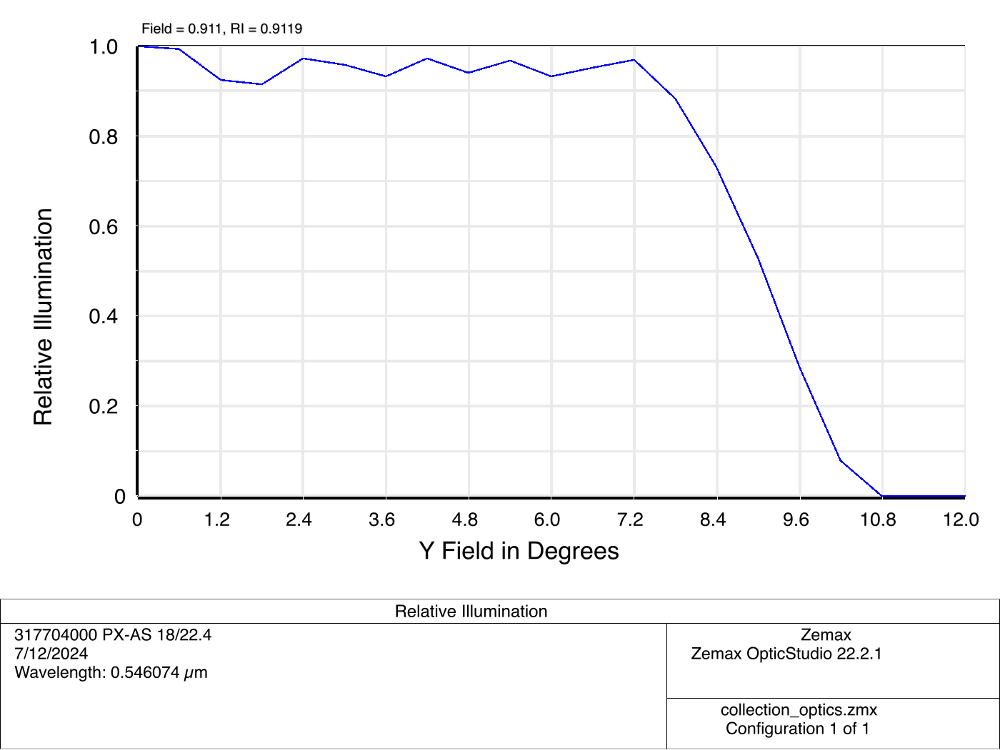
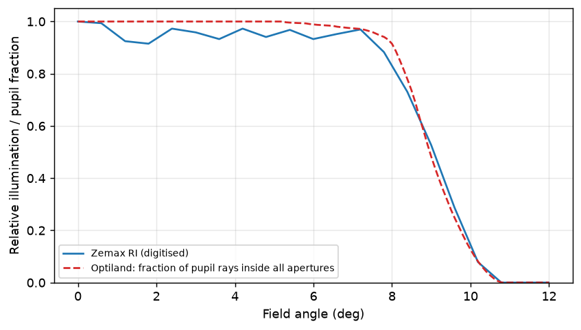
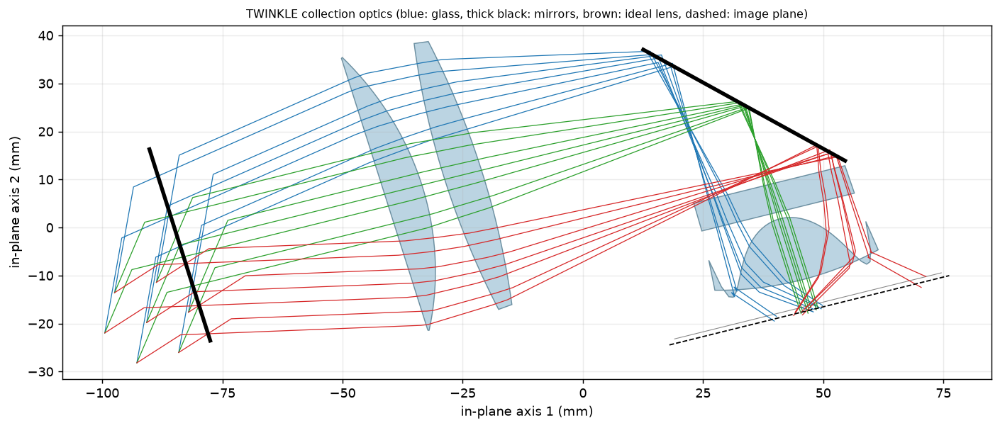
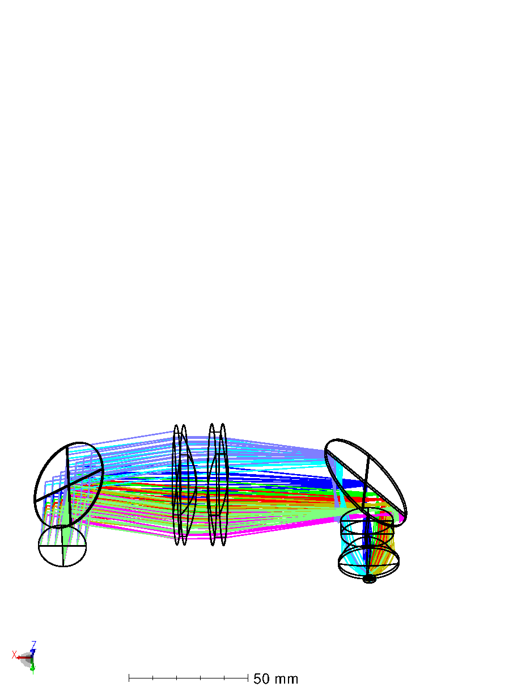
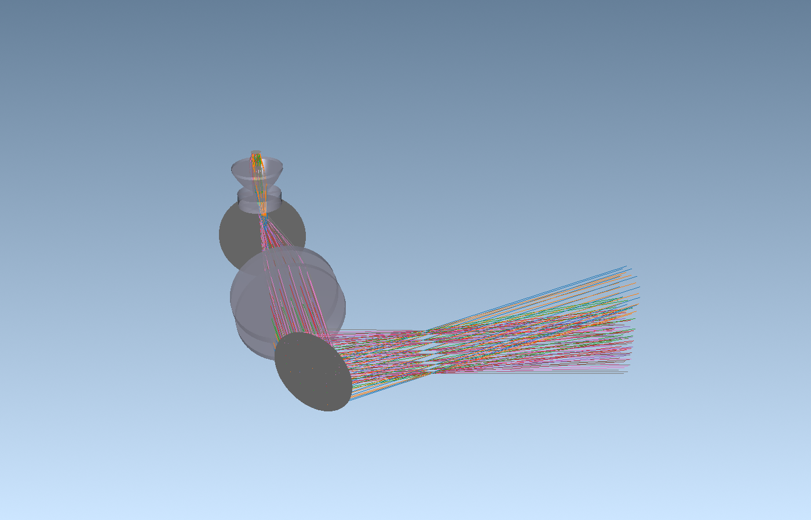
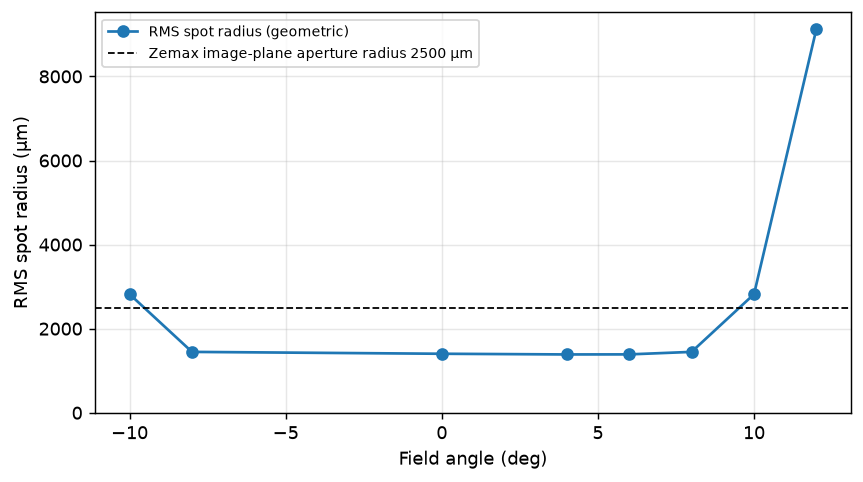
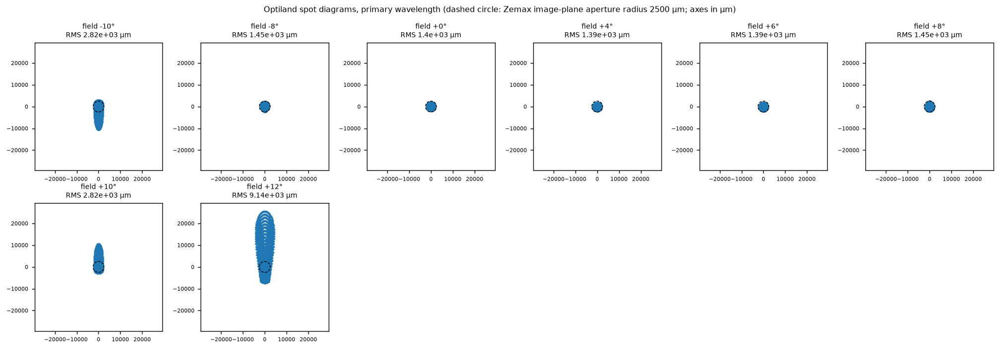

Zemax stores, for every surface whose semi-diameter is automatic, the largest ray radius it computed. We re-trace the same file in Optiland (all fields and wavelengths, 40-ring hexapolar pupil) and take the largest local ray radius. Those values come from the file itself, so they are exact Zemax output, not read off a plot. Status is computed from the tolerances in comparison.json: match within 0.5%, partial within 5%. Relative illumination is compared with the Zemax plot (see below).
| Quantity | Zemax | Optiland | Difference | Result |
|---|
Zemax's relative-illumination plot for field 0° to 12° at 0.546 µm. Optiland has no relative-illumination analysis, so we count the fraction of pupil rays that survive the apertures it imports from the Zemax file (it clips by zeroing a ray's intensity). That ignores the cos-law terms Zemax includes, which are a few per cent here. The Zemax curve ripples by about ±3% from its own sampling, so we compare where the curve falls through 50% and where it reaches zero, plus the mean difference.


Zemax falls through 50% at 9.06° and reaches zero at 10.71°. Optiland's pupil fraction does the same at 8.96° and 10.65°, within 0.1°. The mean absolute difference over the 21 Zemax points is 0.033, about the size of Zemax's own ripple. Note the beam is already clipped at 8°: the 2.5 mm detector aperture and the 12.7 mm condenser limit the field, not the 25 mm lenses.
| Requirement | Status | Notes |
|---|---|---|
| Load the file (aspheric surface, mirror, 8 fields) | Works | Loads, all 14 surfaces. |
| Semi-diameter on automatic surfaces | Works | Both within 0.02%. |
| Clipping by Zemax apertures (relative illumination) | Works | Imported as radial apertures; rays outside get zero intensity. Optiland has no relative-illumination analysis, so we count survivors. |
| RMS spot vs field | Works | Geometric. This is a non-imaging system, so no Airy comparison. |
| EFL | Works | 2297 mm. Not a meaningful figure for a collector, and there is no Zemax value to compare. |
| Strehl, wavefront | Not meaningful | Runs, but the design does not form a sharp image (Strehl 0.003); the detector is meant to collect, not resolve. |
| System layout drawing | Works | Own drawing from Optiland geometry; see the layout section for what it was checked against. |
| Optiland 3D viewer | Unverified | Looks plausible, but not checked against the Zemax layout. |
Drawn by this repository from Optiland's surface positions, sags and ray coordinates (Optiland's own draw fails on folds, issue 9). Glass is filled between surfaces, thick black lines are mirrors, the brown arrow-line is the ideal objective and the dashed line is the image plane. Everything is projected onto the plane of the folds.


collection_vector.eps, rendered). Same element order as the drawing above: stop, 45° fold mirror, two achromat pairs, dichroic mirror, filter, condenser, detector. Checked by eye; we did not compare coordinates.
Loading 3D model…The scene from Optiland's own VTK 3D viewer, rendered offscreen and exported as glTF. Drag to rotate, scroll to zoom, right-drag to pan.
Spots at the eight Zemax fields on the last surface. The dashed circle is the 2.5 mm clear aperture Zemax puts on that surface; beyond about 8° the beam no longer fits inside it, which is the relative-illumination roll-off above.


Full details are in optiland_issues_found.md (issues 5 to 10 are new with these designs).
The same comparison as the verdict table, with the ratio, including any row that was not scored.
| Zemax surface | Comment | Zemax (mm) | Optiland (mm) | Ratio |
|---|
Prescription as stored in the Zemax file (coordinate breaks left out; Optiland absorbs them into the neighbouring surfaces). The Optiland radius is read back from the loaded model, so a difference would show an import error. Thicknesses are signed Zemax values: negative after a mirror.
| Zemax # | Comment | Type | Radius, Zemax (mm) | Radius, Optiland (mm) | Thickness (mm) | Glass | Semi-diameter (mm) | Clear aperture (mm) |
|---|
export UV_PROJECT_ENVIRONMENT=~/uv_venvs/evaluation_mac uv run python -m evaluation_tools.analyze_zmx designs/twinkle_collection # about 1 to 3 minutes uv run python -m evaluation_tools.build_summary # regenerates all HTML
zemax_text.py holds the workarounds for features Optiland ignores (tilted surfaces, pickups, configurations). analyze_zmx.py runs the analysis and build_generic.py writes this page. The Zemax files come from the TWINKLE repository.